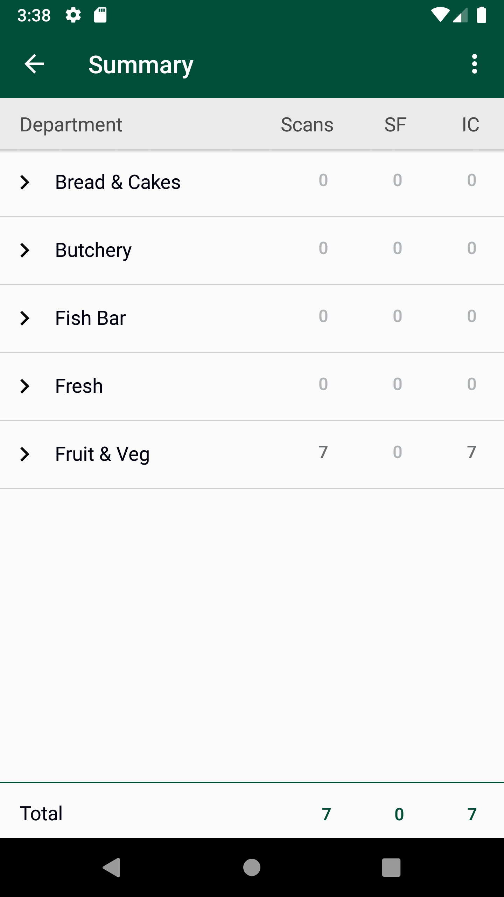
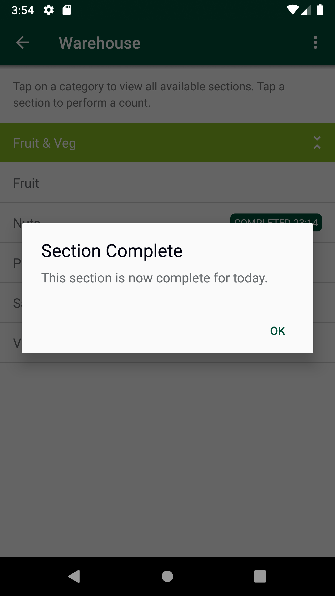

-
Verify PM Gap Scenarios
10:51:44 PM / 00:26:22:894 Fail
Verify PM Gap Scenarios
03.08.2024 10:51:44 PM 03.08.2024 11:18:07 PM 00:26:22:894 · #test-id=1@store_walk @pm_glh @regressionPassTO CHANGE THE DEVICE TIMINGS AS REQUIREDPassTO CHANGE THE DEVICE TIMINGS AS REQUIREDGiven I send the time "03" and mins "30" and meridiem "pm" and current date in listThen I Change timeThen I Change datePassGenerate Google Access Token. This is a Pre-requisite for all Counts modulesPassGenerate Google Access Token. This is a Pre-requisite for all Counts modulesGiven request is made to capture access token and post endpoint for user v2 for "8"Then I Verify the Response Code for the following "432435" is 200And I get the field value for the field "access_token"And Get the generated Access Tocken for SMA app Login ServicePassVerify Screen elements on PM GAP ScreenPassVerify Screen elements on PM GAP ScreenWhen I enter Username and Password for SMA Collegue userAnd I click on login button for SMAThen I click on 'stockMngmtText' on page 'HomePagePO_New'And I click on PMGapsThen I click on Fixture ScanAnd I click on Back ButtonThen I click on OffShelfAnd I click on Back ButtonThen I click on PetrolAnd I click on Back ButtonThen I click on WareHouseAnd I click on Back ButtonThen I click on SummaryAnd I click on Back ButtonAnd I logout of the systemFailVerify user is abel to scan a product in onshelf location and it is marked as GAP by defaultFailVerify user is abel to scan a product in onshelf location and it is marked as GAP by defaultWhen I enter Username and Password for SMA Collegue userAnd I click on login button for SMAThen I click on 'stockMngmtText' on page 'HomePagePO_New'And I click on PMGapsThen I click on Fixture ScanAnd I click on barcode entry ButtonThen Enter "103853612" numberAnd I choose the plan from popup if multiple records presentAnd I verify Product is marked as GAPAnd I click on Back ButtonAnd I click on Back ButtonThen I click on SummaryThen I verify text "Fruit & Veg" is under IC is "1" in summaryGiven request is made to capture access token and post endpoint for user v2 for "" Then I Verify the Response Code for the following "- " is 200
And I get the field value for the field "access_token"And Get the generated Access Tocken for SMA app Login ServiceGiven Get request is made to Get storewalks service for current dateAnd Get Operation perform on service requestThen I verify Product id "103853612" for Store id "89" and Walk type "Gaps" is present in Get storewalk servicecom.morrisons.common.action.Hook.afterScenario(io.cucumber.java.Scenario)Then I verify Section status is "Available" in Get storewalk serviceStep skippedGiven Get request is made to Get storewalks service for current dateStep skippedAnd Get Operation perform on service requestStep skippedThen Verify Get storewalks service response for current dateStep skippedThen Delete request is made to Delete GLH storewalk for store id "89"Step skippedFailVerify user is abel to scan a product in onshelf location and it is marked as GAP by defaultWhen I enter Username and Password for SMA Collegue userAnd I click on login button for SMAThen I click on 'stockMngmtText' on page 'HomePagePO_New'And I click on PMGapsThen I click on Fixture ScanAnd I click on barcode entry ButtonThen Enter "105398043" numberAnd I choose the plan from popup if multiple records presentAnd I verify Product is marked as GAPAnd I click on Back ButtonAnd I click on Back ButtonThen I click on SummaryThen I verify text "Fruit & Veg" is under IC is "1" in summaryGiven request is made to capture access token and post endpoint for user v2 for "" Then I Verify the Response Code for the following "- " is 200
And I get the field value for the field "access_token"And Get the generated Access Tocken for SMA app Login ServiceGiven Get request is made to Get storewalks service for current dateAnd Get Operation perform on service requestThen I verify Product id "105398043" for Store id "89" and Walk type "Gaps" is present in Get storewalk servicecom.morrisons.common.action.Hook.afterScenario(io.cucumber.java.Scenario)
Then I verify Section status is "Available" in Get storewalk serviceStep skippedGiven Get request is made to Get storewalks service for current dateStep skippedAnd Get Operation perform on service requestStep skippedThen Verify Get storewalks service response for current dateStep skippedThen Delete request is made to Delete GLH storewalk for store id "89"Step skippedPassVerify scanned barcode is availabel in Warehouse LocationPassVerify scanned barcode is availabel in Warehouse LocationWhen I enter Username and Password for SMA Collegue userAnd I click on login button for SMAThen I click on 'stockMngmtText' on page 'HomePagePO_New'And I click on PMGapsThen I click on Fixture ScanAnd I click on barcode entry ButtonThen Enter "103853612" numberAnd I choose the plan from popup if multiple records presentAnd I verify Product is marked as GAPAnd I click on Back ButtonAnd I click on Back ButtonThen I click on WareHouseAnd I click on the "Fruit & Veg" availableThen I select one of the "Fruit"And I verify Product marked as gap in WarehouseGiven request is made to capture access token and post endpoint for user v2 for "" Then I Verify the Response Code for the following "- " is 200
And I get the field value for the field "access_token"And Get the generated Access Tocken for SMA app Login ServiceGiven Get request is made to Get storewalks service for current dateAnd Get Operation perform on service requestThen Verify Get storewalks service response for current dateThen Delete request is made to Delete GLH storewalk for store id "89"PassTo verify Last capture section in Stock information displaying correct information when the last capture has been taken in PM GLH and scanned as GAP.PassTo verify Last capture section in Stock information displaying correct information when the last capture has been taken in PM GLH and scanned as GAP.When I enter Username and Password for SMA Collegue userAnd I click on login button for SMAThen I click on 'stockMngmtText' on page 'HomePagePO_New'And I click on PMGapsThen I click on Fixture ScanAnd I click on barcode entry ButtonThen Enter "103853612" numberAnd I choose the plan from popup if multiple records presentAnd I verify Product is marked as GAPThen I click on hotKeyAnd I select StockInformation from the Hotkey MenuAnd I click on barcode entry ButtonThen Enter "103853612" numberAnd I verify Last Capture Type is "PM Gap"And I verify Date and User details for Last captureAnd I verify Counted column and counted quantity "0" for last capture are presentAnd Get the generated Access Tocken for SMA app Login ServiceGiven Get request is made to Get storewalks service for current dateAnd Get Operation perform on service requestThen Verify Get storewalks service response for current dateThen Delete request is made to Delete GLH storewalk for store id "89"PassTo verify Last capture section in Stock information displaying correct information when the last capture has been taken in PM GLH and scanned as GAP.When I enter Username and Password for SMA Collegue userAnd I click on login button for SMAThen I click on 'stockMngmtText' on page 'HomePagePO_New'And I click on PMGapsThen I click on Fixture ScanAnd I click on barcode entry ButtonThen Enter "105398043" numberAnd I choose the plan from popup if multiple records presentAnd I verify Product is marked as GAPThen I click on hotKeyAnd I select StockInformation from the Hotkey MenuAnd I click on barcode entry ButtonThen Enter "105398043" numberAnd I verify Last Capture Type is "PM Gap"And I verify Date and User details for Last captureAnd I verify Counted column and counted quantity "0" for last capture are presentAnd Get the generated Access Tocken for SMA app Login ServiceGiven Get request is made to Get storewalks service for current dateAnd Get Operation perform on service requestThen Verify Get storewalks service response for current dateThen Delete request is made to Delete GLH storewalk for store id "89"FailVerify user is able to mark product as gap, end to endFailVerify user is able to mark product as gap, end to endWhen I enter Username and Password for SMA Collegue userAnd I click on login button for SMAThen I click on 'stockMngmtText' on page 'HomePagePO_New'And I click on PMGapsThen I click on Fixture ScanAnd I click on barcode entry ButtonThen Enter "105398043" numberAnd I choose the plan from popup if multiple records presentAnd I click on OKAnd I verify Product is marked as GAPAnd I click on Back ButtonAnd I click on Back ButtonThen I click on WareHouseAnd I click on the "Fruit & Veg" availableThen I select one of the "Nuts"Then I verify product is displayed as gap in WarehouseAnd I click on product in warehouse "105398043"Then I verify Popup is displayed for confirm stock foundAnd I click on Confirm optionThen I verify Stock Found is DisplayedAnd I click on product in warehouse "105398043"And I click on Confirm optionThen I verify product is displayed as gap in WarehouseThen I click on confirm count area buttonAnd I click on confirm count popupAnd I verify Section completed status is displayedAnd I click on Back ButtonThen I click on SummaryAnd I verify "Fruit & Veg" is displayed under summaryThen I verify text is under Low is "1" in summarycom.morrisons.common.action.Hook.afterScenario(io.cucumber.java.Scenario)And Get the generated Access Tocken for SMA app Login ServiceStep skippedGiven Get request is made to Get storewalks service for current dateStep skippedAnd Get Operation perform on service requestStep skippedThen Verify Get storewalks service response for current dateStep skippedThen Delete request is made to Delete GLH storewalk for store id "89"Step skippedFailVerify Stock Found End to End ScenarioFailVerify Stock Found End to End ScenarioWhen I enter Username and Password for SMA Collegue userAnd I click on login button for SMAThen I click on 'stockMngmtText' on page 'HomePagePO_New'And I click on PMGapsThen I click on Fixture ScanAnd I click on barcode entry ButtonThen Enter "105398043" numberAnd I choose the plan from popup if multiple records presentAnd I click on OKAnd I verify Product is marked as GAPAnd I click on Back ButtonAnd I click on Back ButtonThen I click on WareHouseAnd I click on the "Fruit & Veg" availableThen I select one of the "Nuts"Then I verify product is displayed as gap in Warehousecom.morrisons.common.action.Hook.afterScenario(io.cucumber.java.Scenario)
And I click on product in warehouse "105398043"Step skippedThen I verify Popup is displayed for confirm stock foundStep skippedAnd I click on Confirm optionStep skippedThen I verify Stock Found is DisplayedStep skippedThen I click on confirm count area buttonStep skippedAnd I click on confirm count popupStep skippedAnd I click on Back ButtonStep skippedThen I click on SummaryStep skippedAnd I verify "Fruit & Veg" is displayed under summaryStep skippedAnd I click on the "Fruit & Veg" availableStep skippedThen I verify text "Fruit & Veg" is under stockfound is "1" in summaryStep skippedAnd Get the generated Access Tocken for SMA app Login ServiceStep skippedGiven Get request is made to Get storewalks service for current dateStep skippedAnd Get Operation perform on service requestStep skippedThen Verify Get storewalks service response for current dateStep skippedThen Delete request is made to Delete GLH storewalk for store id "89"Step skipped
-
java.lang.AssertionError
3 tests
java.lang.AssertionError
3 failedStatus Timestamp TestName Fail 22:58:57 PM Then I verify Product id "103853612" for Store id "89" and Walk type "Gaps" is present in Get storewalk service Verify PM Gap Scenarios.Verify user is abel to scan a product in onshelf location and it is marked as GAP by default.Then I verify Product id "103853612" for Store id "89" and Walk type "Gaps" is present in Get storewalk serviceFail 23:01:33 PM Then I verify Product id "105398043" for Store id "89" and Walk type "Gaps" is present in Get storewalk service Verify PM Gap Scenarios.Verify user is abel to scan a product in onshelf location and it is marked as GAP by default.Then I verify Product id "105398043" for Store id "89" and Walk type "Gaps" is present in Get storewalk serviceFail 23:14:43 PM Then I verify text is under Low is "1" in summary Verify PM Gap Scenarios.Verify user is able to mark product as gap, end to end.Then I verify text is under Low is "1" in summary -
org.openqa.selenium.NoSuchElementException
1 tests
org.openqa.selenium.NoSuchElementException
1 failedStatus Timestamp TestName Fail 23:17:42 PM Then I verify product is displayed as gap in Warehouse Verify PM Gap Scenarios.Verify Stock Found End to End Scenario.Then I verify product is displayed as gap in Warehouse
-
@store_walk
11 tests
@store_walk
6 passed 5 failedStatus Timestamp TestName Fail 22:51:44 PM Verify PM Gap Scenarios Pass 22:51:44 PM TO CHANGE THE DEVICE TIMINGS AS REQUIRED Verify PM Gap Scenarios.TO CHANGE THE DEVICE TIMINGS AS REQUIREDPass 22:53:47 PM Generate Google Access Token. This is a Pre-requisite for all Counts modules Verify PM Gap Scenarios.Generate Google Access Token. This is a Pre-requisite for all Counts modulesPass 22:54:33 PM Verify Screen elements on PM GAP Screen Verify PM Gap Scenarios.Verify Screen elements on PM GAP ScreenFail 22:56:14 PM Verify user is abel to scan a product in onshelf location and it is marked as GAP by default Verify PM Gap Scenarios.Verify user is abel to scan a product in onshelf location and it is marked as GAP by defaultFail 22:58:58 PM Verify user is abel to scan a product in onshelf location and it is marked as GAP by default Verify PM Gap Scenarios.Verify user is abel to scan a product in onshelf location and it is marked as GAP by defaultPass 23:01:34 PM Verify scanned barcode is availabel in Warehouse Location Verify PM Gap Scenarios.Verify scanned barcode is availabel in Warehouse LocationPass 23:05:03 PM To verify Last capture section in Stock information displaying correct information when the last capture has been taken in PM GLH and scanned as GAP. Verify PM Gap Scenarios.To verify Last capture section in Stock information displaying correct information when the last capture has been taken in PM GLH and scanned as GAP.Pass 23:08:04 PM To verify Last capture section in Stock information displaying correct information when the last capture has been taken in PM GLH and scanned as GAP. Verify PM Gap Scenarios.To verify Last capture section in Stock information displaying correct information when the last capture has been taken in PM GLH and scanned as GAP.Fail 23:11:03 PM Verify user is able to mark product as gap, end to end Verify PM Gap Scenarios.Verify user is able to mark product as gap, end to endFail 23:14:44 PM Verify Stock Found End to End Scenario Verify PM Gap Scenarios.Verify Stock Found End to End Scenario -
@pm_glh
11 tests
@pm_glh
6 passed 5 failedStatus Timestamp TestName Fail 22:51:44 PM Verify PM Gap Scenarios Pass 22:51:44 PM TO CHANGE THE DEVICE TIMINGS AS REQUIRED Verify PM Gap Scenarios.TO CHANGE THE DEVICE TIMINGS AS REQUIREDPass 22:53:47 PM Generate Google Access Token. This is a Pre-requisite for all Counts modules Verify PM Gap Scenarios.Generate Google Access Token. This is a Pre-requisite for all Counts modulesPass 22:54:33 PM Verify Screen elements on PM GAP Screen Verify PM Gap Scenarios.Verify Screen elements on PM GAP ScreenFail 22:56:14 PM Verify user is abel to scan a product in onshelf location and it is marked as GAP by default Verify PM Gap Scenarios.Verify user is abel to scan a product in onshelf location and it is marked as GAP by defaultFail 22:58:58 PM Verify user is abel to scan a product in onshelf location and it is marked as GAP by default Verify PM Gap Scenarios.Verify user is abel to scan a product in onshelf location and it is marked as GAP by defaultPass 23:01:34 PM Verify scanned barcode is availabel in Warehouse Location Verify PM Gap Scenarios.Verify scanned barcode is availabel in Warehouse LocationPass 23:05:03 PM To verify Last capture section in Stock information displaying correct information when the last capture has been taken in PM GLH and scanned as GAP. Verify PM Gap Scenarios.To verify Last capture section in Stock information displaying correct information when the last capture has been taken in PM GLH and scanned as GAP.Pass 23:08:04 PM To verify Last capture section in Stock information displaying correct information when the last capture has been taken in PM GLH and scanned as GAP. Verify PM Gap Scenarios.To verify Last capture section in Stock information displaying correct information when the last capture has been taken in PM GLH and scanned as GAP.Fail 23:11:03 PM Verify user is able to mark product as gap, end to end Verify PM Gap Scenarios.Verify user is able to mark product as gap, end to endFail 23:14:44 PM Verify Stock Found End to End Scenario Verify PM Gap Scenarios.Verify Stock Found End to End Scenario -
@ll
3 tests
@ll
3 failedStatus Timestamp TestName Fail 22:56:14 PM Verify user is abel to scan a product in onshelf location and it is marked as GAP by default Verify PM Gap Scenarios.Verify user is abel to scan a product in onshelf location and it is marked as GAP by defaultFail 22:56:14 PM Verify user is abel to scan a product in onshelf location and it is marked as GAP by default Verify PM Gap Scenarios.Verify user is abel to scan a product in onshelf location and it is marked as GAP by defaultFail 22:58:58 PM Verify user is abel to scan a product in onshelf location and it is marked as GAP by default Verify PM Gap Scenarios.Verify user is abel to scan a product in onshelf location and it is marked as GAP by default -
@timeChange
2 tests
@timeChange
2 passedStatus Timestamp TestName Pass 22:51:44 PM TO CHANGE THE DEVICE TIMINGS AS REQUIRED Verify PM Gap Scenarios.TO CHANGE THE DEVICE TIMINGS AS REQUIREDPass 22:51:44 PM TO CHANGE THE DEVICE TIMINGS AS REQUIRED Verify PM Gap Scenarios.TO CHANGE THE DEVICE TIMINGS AS REQUIRED -
@ds1
2 tests
@ds1
2 passedStatus Timestamp TestName Pass 22:53:47 PM Generate Google Access Token. This is a Pre-requisite for all Counts modules Verify PM Gap Scenarios.Generate Google Access Token. This is a Pre-requisite for all Counts modulesPass 22:53:47 PM Generate Google Access Token. This is a Pre-requisite for all Counts modules Verify PM Gap Scenarios.Generate Google Access Token. This is a Pre-requisite for all Counts modules -
@zzy
2 tests
@zzy
2 passedStatus Timestamp TestName Pass 23:01:34 PM Verify scanned barcode is availabel in Warehouse Location Verify PM Gap Scenarios.Verify scanned barcode is availabel in Warehouse LocationPass 23:01:34 PM Verify scanned barcode is availabel in Warehouse Location Verify PM Gap Scenarios.Verify scanned barcode is availabel in Warehouse Location -
@regression
11 tests
@regression
6 passed 5 failedStatus Timestamp TestName Fail 22:51:44 PM Verify PM Gap Scenarios Pass 22:51:44 PM TO CHANGE THE DEVICE TIMINGS AS REQUIRED Verify PM Gap Scenarios.TO CHANGE THE DEVICE TIMINGS AS REQUIREDPass 22:53:47 PM Generate Google Access Token. This is a Pre-requisite for all Counts modules Verify PM Gap Scenarios.Generate Google Access Token. This is a Pre-requisite for all Counts modulesPass 22:54:33 PM Verify Screen elements on PM GAP Screen Verify PM Gap Scenarios.Verify Screen elements on PM GAP ScreenFail 22:56:14 PM Verify user is abel to scan a product in onshelf location and it is marked as GAP by default Verify PM Gap Scenarios.Verify user is abel to scan a product in onshelf location and it is marked as GAP by defaultFail 22:58:58 PM Verify user is abel to scan a product in onshelf location and it is marked as GAP by default Verify PM Gap Scenarios.Verify user is abel to scan a product in onshelf location and it is marked as GAP by defaultPass 23:01:34 PM Verify scanned barcode is availabel in Warehouse Location Verify PM Gap Scenarios.Verify scanned barcode is availabel in Warehouse LocationPass 23:05:03 PM To verify Last capture section in Stock information displaying correct information when the last capture has been taken in PM GLH and scanned as GAP. Verify PM Gap Scenarios.To verify Last capture section in Stock information displaying correct information when the last capture has been taken in PM GLH and scanned as GAP.Pass 23:08:04 PM To verify Last capture section in Stock information displaying correct information when the last capture has been taken in PM GLH and scanned as GAP. Verify PM Gap Scenarios.To verify Last capture section in Stock information displaying correct information when the last capture has been taken in PM GLH and scanned as GAP.Fail 23:11:03 PM Verify user is able to mark product as gap, end to end Verify PM Gap Scenarios.Verify user is able to mark product as gap, end to endFail 23:14:44 PM Verify Stock Found End to End Scenario Verify PM Gap Scenarios.Verify Stock Found End to End Scenario -
@sma
16 tests
@sma
9 passed 7 failedStatus Timestamp TestName Pass 22:53:47 PM Generate Google Access Token. This is a Pre-requisite for all Counts modules Verify PM Gap Scenarios.Generate Google Access Token. This is a Pre-requisite for all Counts modulesPass 22:53:47 PM Generate Google Access Token. This is a Pre-requisite for all Counts modules Verify PM Gap Scenarios.Generate Google Access Token. This is a Pre-requisite for all Counts modulesPass 22:54:33 PM Verify Screen elements on PM GAP Screen Verify PM Gap Scenarios.Verify Screen elements on PM GAP ScreenPass 22:54:33 PM Verify Screen elements on PM GAP Screen Verify PM Gap Scenarios.Verify Screen elements on PM GAP ScreenFail 22:56:14 PM Verify user is abel to scan a product in onshelf location and it is marked as GAP by default Verify PM Gap Scenarios.Verify user is abel to scan a product in onshelf location and it is marked as GAP by defaultFail 22:56:14 PM Verify user is abel to scan a product in onshelf location and it is marked as GAP by default Verify PM Gap Scenarios.Verify user is abel to scan a product in onshelf location and it is marked as GAP by defaultFail 22:58:58 PM Verify user is abel to scan a product in onshelf location and it is marked as GAP by default Verify PM Gap Scenarios.Verify user is abel to scan a product in onshelf location and it is marked as GAP by defaultPass 23:01:34 PM Verify scanned barcode is availabel in Warehouse Location Verify PM Gap Scenarios.Verify scanned barcode is availabel in Warehouse LocationPass 23:01:34 PM Verify scanned barcode is availabel in Warehouse Location Verify PM Gap Scenarios.Verify scanned barcode is availabel in Warehouse LocationPass 23:05:03 PM To verify Last capture section in Stock information displaying correct information when the last capture has been taken in PM GLH and scanned as GAP. Verify PM Gap Scenarios.To verify Last capture section in Stock information displaying correct information when the last capture has been taken in PM GLH and scanned as GAP.Pass 23:05:03 PM To verify Last capture section in Stock information displaying correct information when the last capture has been taken in PM GLH and scanned as GAP. Verify PM Gap Scenarios.To verify Last capture section in Stock information displaying correct information when the last capture has been taken in PM GLH and scanned as GAP.Pass 23:08:04 PM To verify Last capture section in Stock information displaying correct information when the last capture has been taken in PM GLH and scanned as GAP. Verify PM Gap Scenarios.To verify Last capture section in Stock information displaying correct information when the last capture has been taken in PM GLH and scanned as GAP.Fail 23:11:03 PM Verify user is able to mark product as gap, end to end Verify PM Gap Scenarios.Verify user is able to mark product as gap, end to endFail 23:11:03 PM Verify user is able to mark product as gap, end to end Verify PM Gap Scenarios.Verify user is able to mark product as gap, end to endFail 23:14:44 PM Verify Stock Found End to End Scenario Verify PM Gap Scenarios.Verify Stock Found End to End ScenarioFail 23:14:44 PM Verify Stock Found End to End Scenario Verify PM Gap Scenarios.Verify Stock Found End to End Scenario
Started
Mar 8, 2024 10:51:41 PM
Ended
Mar 8, 2024 11:18:08 PM
Features Passed
0
Features Failed
1
Features
Scenarios
Steps
Timeline
Tags
| Name | Passed | Failed | Skipped | Others | Passed % |
|---|---|---|---|---|---|
| @store_walk | 6 | 5 | 0 | 0 | 54.545% |
| @pm_glh | 6 | 5 | 0 | 0 | 54.545% |
| @ll | 0 | 3 | 0 | 0 | 0% |
| @timeChange | 2 | 0 | 0 | 0 | 100% |
| @ds1 | 2 | 0 | 0 | 0 | 100% |
| @zzy | 2 | 0 | 0 | 0 | 100% |
| @regression | 6 | 5 | 0 | 0 | 54.545% |
| @sma | 9 | 7 | 0 | 0 | 56.25% |